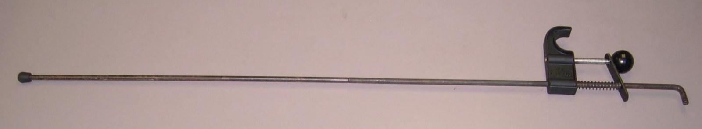

Doc no. MOC-TSB-12-05 // Vol. 12 No. 05 // Mar 10, 2012 // Fuel
Accelerator Pedal Depressor
New75007
MOC has announced the availability of an Accelerator Pedal Depressor, which may be used to keep the engine at a fixed RPM. This will help increase efficiency in performing fuel system services on vehicles with Electronic throttle control, allowing a single technician to perform the service. This Pedal Depressor is now available to purchase.
What's new
Contact
For more information, contact the Machine & Equipment Department at 866.244.6621.

Part numbers
| Part No. | Description | Notes |
|---|---|---|
| 75007 | Depressor, Accelerator Pedal |